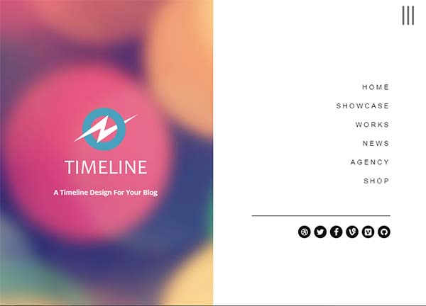
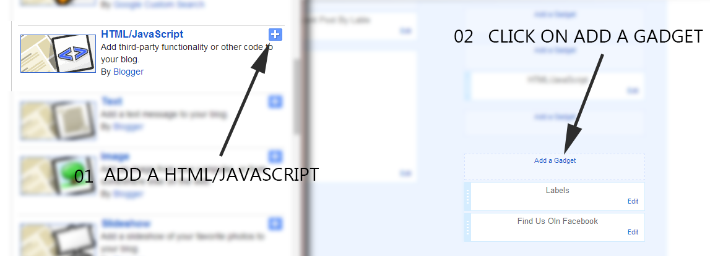
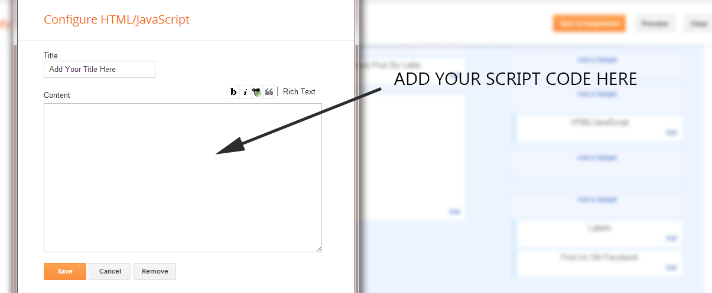
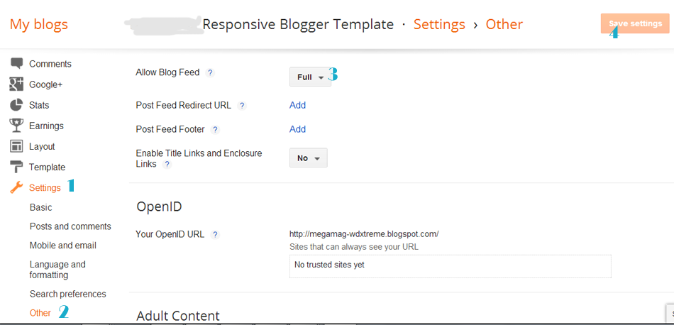

“Timeline Blogger Template” Documentation by “ThemeXpose” v1.0

Created: 11/03/2015
By: ThemeXpose
xposetheme@gmail.com
Thank you for Downloading my theme. If you have any questions that are beyond the scope of this help file, please feel free to email via my user page contact form. Thanks so much!
If you have any problem about this template then please visit ThemeXpose.com
Note : Premium and lifetime support only delivered to Full version buyers.
But this is only free version (Free Template Will Contain Non Removable Credits and limited features).
It is forbidden to remove the credit link due to the elimination of the credit links will make your blog to redirect ThemeXpose Official site. For those who want to remove can pay $ 4.95.
Buy our Full Version and get:
1.Remove Footer credits
2.One time payment
3.For Unlimited Domains
4.Lifetime Premium Support
5.No Encrypted Scripts
6.Lifetime Template Updates
7.And Much More....
Buy now from ThemeXpose.com
Table of Contents
- Installation
- Upload Logo
- Setting up the menu
- Add Social Links
- Flicker Image
- Enable Mobile Template
- Enable Full Feed
- Enable Search Preference
- Author Description
- Installation - top
- Upload Logo- top
- Setting up Menu logo and description - top 
- On Blogger Dashbord Click Template
- Click Edit HTML
- Scroll down and Find this Code :
<div class='nav-logo-wrap'> <a expr:href='data:blog.homepageUrl'> <img alt='Expose' src='http://3.bp.blogspot.com/-j3B7x-svlmQ/VQBgtuWGbHI/AAAAAAAAET0/4laleknKb8k/s1600/mylogo2.png' /> </a> <div class='slogan-wrap'> <h3 class='white font3 slogan-text'>A Timeline Design For Your Blog</h3> </div> </div>
- Change Image url with your logo image and description
- Setting up the menu - top
- On Blogger Dashbord Click Template
- Click Edit HTML
- Scroll down and Find this Code :
<nav class='nav-item-wrap'> <ul class='main-nav-menu main-nav-menu-effect' id='menu-menu-1'> <li><a expr:href='data:blog.homepageUrl'>Home</a></li> <li><a href='#'>Showcase</a></li> <li><a href='#'>Works</a></li> <li><a href='#'>News</a></li> <li><a href='#'>Agency</a></li> <li><a href='#'>Shop</a></li> </ul> </nav>
- Change # with yours URL link
- Add Social Links - top
- Flicker Image - top
- Enable Mobile Template - top
- Enable Full Feed - top Access Settings menu and choose Other settings. Click drop-down list at Allow Blog Feed option, then choose Full. After that, click Save settings button at the top right corner.
- Enable Search Preference - top To improve your blog SEO, please enable Blogger Search Preferences. Access your Settings menu, choose Search preferences tab and click Edit link on Meta tags section
- Author Description - top
- On Blogger Dashbord Click Template
- Click Edit HTML
- Scroll down and Find this Code :
<h2><a href='#' rel='author external' title='Visit admin’s website'><data:post.author/></a></h2> <span class='author-position'>Developer</span> <p class='author-desc'>Cras justo odio, dapibus ac facilisis in, egestas eget quam. Curabitur blandit tempus porttitor. Vivamus sagittis lacus vel augue laoreet rutrum faucibus dolor auctor.</p> <div class='author-social-media'> <ul> <li class='home'> <a href='#' target='_blank'><i class='fa fa-home' /></a> </li> <li class='behance'> <a class='has-tooltip' data-original-title='Behance' data-placement='top' data-toggle='tooltip' href='#' target='_blank' title=''><i class='fa fa-behance ' /></a> </li> <li class='dribbble'> <a class='has-tooltip' data-original-title='Dribbble' data-placement='top' data-toggle='tooltip' href='#' target='_blank' title=''><i class='fa fa-dribbble ' /></a> </li> <li class='facebook'> <a class='has-tooltip' data-original-title='Facebook' data-placement='top' data-toggle='tooltip' href='#' target='_blank' title=''><i class='fa fa-facebook ' /></a> </li> <li class='user_email'> <a class='has-tooltip' data-original-title='Send E-mail' data-placement='top' data-toggle='tooltip' href='mailto:themexpose@gmail.com.com' title=''><i class='fa fa-envelope ' /></a> </li> <li class='rss'> <a class='has-tooltip' data-original-title='Rss Feed' data-placement='top' data-toggle='tooltip' href='#' target='_blank' title=''><i class='fa fa-rss' /></a> </li> </ul>
- Change Author description and # with your social links
Now you have Timeline Blogger Template. You Can Follow This Steps To Upload Your Blogger Template To Blogger Platform. First Login to your Blogger DashBoard by Using Your Google Username And Password from Here.
Then follow these steps:
1. On Blogger Dashboard Click Template.
2. Click Backup/Restore button (Top Right).
3. Click Choose ( Browse..) File button. Find where the “Timeline-Blogger-Template.xml” file location.
4. Then Click Upload.
Note: Before Uploading This Template Mobile Blogger Template Must Enable to make Blogger Customize Work
Access your blog Layout > click Edit link on Header widget
To Edit LOGO in this theme you can follow this step:
To Edit Menu in this theme you can follow this step:
You Can See that sidebar Right side area have Social Icons Collection. To Edit Social Icon in this theme you can follow this step:
Sidebar Social Icons1. On Blogger Dashbord Click Template
2. Click Edit HTML
3. Scroll down and Find this Code :
<div class='copy-credits'> <ul class='nav-social'> <li> <a href='#' target='_blank'> <i class='fa fa-dribbble' /> </a> </li> <li> <a href='#' target='_blank'> <i class='fa fa-twitter' /> </a> </li> <li> <a href='#' target='_blank'> <i class='fa fa-facebook' /> </a> </li> <li> <a href='#' target='_blank'> <i class='fa fa-vine' /> </a> </li> <li> <a href='#' target='_blank'> <i class='fa fa-vimeo-square' /> </a> </li> <li> <a href='#' target='_blank'> <i class='fa fa-github' /> </a> </li> </ul> </div>
4. Change Links or # with yours Social URL link
You Can See sidebar Have Flicker Image Widgets.
Follow this Steps To Add Flicker Widgets
1. Go To Blogger >> Layout
2. Now Click On "Add a Gadget" and Add Your Own Widgets

3. Now Add Your Java Script Here

<div class="flickr_plugin">
<script src="http://www.flickr.com/badge_code_v2.gne?count=8&display=latest&size=s&layout=x&source=user&user=52617155@N08" type="text/javascript">
</script>
</div>
Replace This 52617155@N08 With Your Flicker Id
You Can Use http://idgettr.com/ to generate Your Flicker Id
After you apply mobile version for this template, Advance Editor will be disabled. This is official bug of Blogger. So, please make sure, you used Advance Editor to change all settings you want before do this step.
As default, Blogger will use its own template for you blog on mobile. So if you want to use Timeline template on mobile devices, please enable it first.Access your Template menu and click on Gear button of Mobile template.
 In Choose mobile template window, check "No. Show desktop template on mobile devices." option, then click Save button.
In Choose mobile template window, check "No. Show desktop template on mobile devices." option, then click Save button.


Next, check Yes option, then type your Blog Description into the text field and click Save changes.

Once again, thank you so much for purchasing this theme. As I said at the beginning, I'd be glad to help you if you have any questions relating to this theme. No guarantees, but I'll do my best to assist.